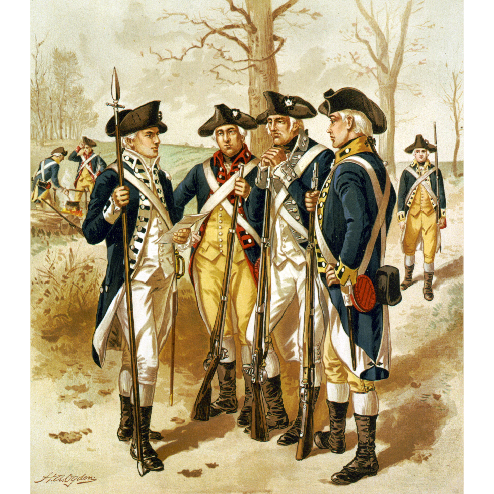

|
AREA OF RESEARCH
Abstract of Martin L. Nicolai, “On a Distant Campaign: French Officers and Their Views on Society and the Conduct of War in North America During the Seven Years’ War” (M.A. thesis, Queen’s University, 1986). 262 pages. Available in print in the Queen’s University Archives at Kathleen Ryan Hall, and in the Microform Collections of the Stauffer Humanities and Social Sciences Library at Queen’s University, Kingston, Ontario, as well as in the Library and Archives Canada Microfiche Collections in Ottawa. See this link.
This is a study of a group of French officers who served in Canada during the Seven Years’ War, concentrating on their views on Canadian and American colonial society; their part in the development of French military theory in North America; their relationship with Canadian troops, Canadian officers, and Indians; and their assessment of the Anglo-American military. The principal sources for the study are the journals, memoirs, reports, and letters of some two dozen French officers of varying rank and social background.
The officers’ observations on the Canadian habitants and seigneurs provide valuable insights into the nature of Canadian society at the end of the French Régime, and their assessments of American colonial government, social structures, and policy of toleration for religious and ethnic minorities are important because they reveal typical mid-eighteenth-century European attitudes toward institutions and ideas which in our own century have gained wide acceptance. Also discussed is the quarrel between the Marquis de Montcalm and Governor-General Vaudreuil and the respective followers of these two leaders, a confrontation which was essentially based on rivalry between two political-military elites, but was also affected by the strong provincial identity of the local people.
Contemporary theories on irregular tactics had an impact on the officers’ perception of the value of Canadian soldiers, for while they had limited respect for the small-scale raiding expeditions typical of North American warfare, they placed great value on efforts to transform the Canadian militia into effective light infantry capable of playing an important part on the conventional battlefield. In assessing the Anglo-American forces the French officers differentiated between the provincial troops, which they had little respect for, and the British regulars, which they considered superb infantrymen.
Abstract of Martin L. Nicolai, “Subjects and Citizens: French Officers and the North American Experience, 1755-1783” (Ph.D. dissertation, Queen’s University, 1992). 457 pages. Available in print in the Queen’s University Archives at Kathleen Ryan Hall and in the Microform Collections of the Stauffer Humanities and Social Sciences Library at Queen’s University as well as in the Library and Archives Canada Microfiche Collections in Ottawa. See this link. Copies can also be purchased at ProQuest.
When the social, political, and economic beliefs of French officers who served in Canada during the Seven Years’ War are compared with those of officers who fought in the United States during the War of American Independence, it becomes evident that substantial ideological changes took place in the officer corps between 1760 and 1780. Both groups of Frenchmen rejected the concept of the noble savage and considered “civilization” a more worthy ideal, but their views differed in a number of other respects.
Montcalm’s officers defended every detail of the traditional social hierarchy, and displayed deeply conservative values with regards to women, marriage, and other social relationships. They showed no sign of political consciousness, and believed that the state’s economic role was to distribute economic privileges to deserving subjects. In addition, despite anticlericalism in their ranks, they did not tolerate popular dissent from the established church.
French officers two decades later, by contrast, were interested in the concepts of liberty and equality before the law, and although they possessed only the first glimmerings of a political consciousness, the new political climate generated a debate about citizenship, what the best institutions were to protect “liberty” in France, and the morality of slavery. Officers remained generally ignorant of economic theory, but they usually supported a free domestic marketplace and in some cases international free trade. In addition, officers had become openly deistic in their attitudes, and attacked almost all aspects of traditional religion. Judging by these changing attitudes, French noblemen in the military were clearly affected by the Enlightenment, and cannot be dismissed as a static, unprogressive element of educated French society.
|